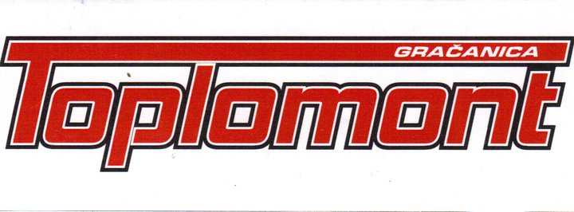

|  | TOPLOMONT75320 GračanicaVaroš b.bTelefon: +387 62 284 - 171 PDV: 4310436030006 Račun 132-180200-9722113 NLB Tuzlanska Banka Gračanica |
|
|
| RB | Šifra | Naziv artikla | JM | Količina | Cijena sa PDV | Vrijednost sa PDV | % popusta | PDV osnovica | % PDV | PDV Iznos | Iznos za naplatu |
|---|---|---|---|---|---|---|---|---|---|---|---|
| 1 | a | a | a | 2 | 5 KM | 10 KM | 3 | 8.29 KM | 17 | 1.41 KM | 9.7 KM |
| 1 | 225 | Kućaovojesamozatestiranjevelikinazivyoloswag | 255 | 1 | 117 KM | 117.0 KM | 0 | 100.0 KM | 17 | 17.0 KM | 117.0 KM |
| 1 | 255 | Kuća | 255 | 255 | 100 KM | 25500.0 KM | 10 | 19615.38 KM | 17 | 3334.61 KM | 22949.99 KM |
| 1 | 100 | Testni artikal | 255 | 10 | 100 KM | 1000.0 KM | 10 | 769.23 KM | 17 | 130.77 KM | 900.0 KM |
| 1 | test | test | test | 1 | 100 KM | 100.0 KM | 1 | 84.62 KM | 17 | 14.39 KM | 99.01 KM |
| 1 | 1 | stolica | 1 | 10 | 11 KM | 10.0 KM | 111 | -0.94 KM | 17 | 1.44 KM | 0.51 KM |
| 7 | 2 | test | 1 | 10 | 1 KM | 10.0 KM | 1 | 8.46 KM | 17 | 1.44 KM | 9.9 KM |
| 9991 | 225 | test-225 | 5 | 10 | 10.50 KM | 105.0 KM | 10 | 80.77 KM | 17 | 13.73 KM | 94.5 KM |
| Vrijednost sa PDV: | 26852.0 KM |
| Osnovica za obračun PDV-a: | 20665.81 KM |
| Obračunati PDV: | 3514.79 KM |
| Iznos sa PDV-om za naplatu: | 24180.61 KM |
Robu izdao
Robu primio
Fakturisao